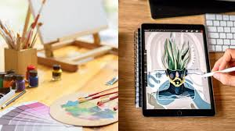

There are many forms of art, but in this website, I will explain 2 common types that is seen many times in our everyday lives
Art is a form of creative media. Every artist has their own style, art is involved in many things, such as animation, sculpting, games, and more. Art is not meant to be easy, but anyone can do art with practice, it is your creativity and your thoughts and your emotions. It can represent things, or nothing at all, your art is what you want it to be.
| Art | Digital art | Traditional art |
|---|---|---|
 |
|
|